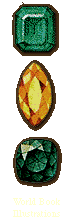

|
 |
Pirates off India’s southwest coast Off the coast of India, my ship was caught in a pirates' net, formed by many pirate ships hunting together. When one ship spies a merchant ship, it signals the others with fire or smoke, and they all rush to plunder the hapless victim. But at least they did not kill us. When we reached Pigeon Island, between Hinawr and Fakanur, we were assailed by the infidels with twelve warships, who fought us vigorously and got the better of us. They seized all that I had kept in reserve for emergencies, together with the jewels and precious stones which the king of Ceylon gave me. They also stole my clothes and the traveling provisions I kept with me, which had been given me by pious men and saints, leaving me with no covering but my trousers. They seized the possessions of every one on board, and put us ashore on the coast. |